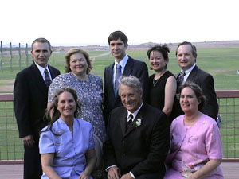
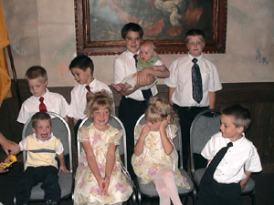
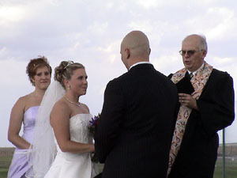

| Saturday, July 26, 2003 | |
|  After breakfast we returned to Wal-Mart for a few more things and then met up with even more family at Grandma and Grandpa Hatch's hotel. George and Debbie Nowland and James and Carin Nowland along with Ron Huntzinger were all there. | |
|  Debbie and George had spoken with someone on the plane and he had recommended a restaurant in the area, so we decided to give it a try. The name of the restaurant was El Pinto. The food was great. We had been in New Mexico for days and we finally got a chance to get some good food. | |
| After lunch we all went our separate ways to get ready for the wedding.
We stopped at an outdoor garden accessory shop. They had large (7-8 feet) metal lizards that we wanted to look at. Had the price been right, we would have found a way to get one home. |
|
| Since we are planning to drive to Bloomfield after the reception, we have already packed up the camper. So we went to find George and Debbie at their hotel to visit for a while and to have somewhere to change our clothes for the wedding. | |
| 5:00 pm |
 Bruce and Kelsey's wedding is the main reason we drove 1600 miles. Their wedding was nice. They even had spectacular special effects. At all the right times in the ceremony lighting would strike (it never rained though). |
| The reception was held in the restaurant at the golf club. The boys seemed to really enjoy themselves. | |
| 9:30 pm ? |
After the reception we started for Bloomfield. |
| 11:00 pm? 29759 |
Stopped for gas in Cuba at a 7/11 where Marie always stopped on field trips. |
| Really Late |
We set up the camper in Grandma and Grandpa Hatch's yard. We had driven through the KOA in Bloomfield, but it seemed full. |
| See all wedding photos | |
| See all family photos | |
| See all reception photos | |
| << Previous | Next >> |
{kind=link}
{kind=link}
{kind=link}